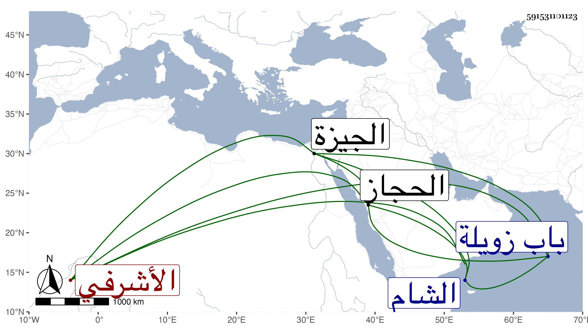

0902Sakhawi.DawLamic.ITO20230111-ara1.EIS1600.591531101123
Biography ID: 591531101123
216
جانبك الأشرفي برسباي . اشتراه صغيرا فرقاه إلى أن إمرة طبلخاناه في محرم سنة ست وعشرين وأرسله إلى الشام لتقليد النواب فأفاد مالا جزيلا وتقرر أولا خازندارا ثم دويدارا ثانيا بعد سفر قرقماش إلى الحجاز وصارت غالب الأمور معذوقة به وليس للدوادار الكبير معه كلام ، وتمكن من أستاذه غاية التمكن حتى صار ما يعمل برأيه يستمر وما لا ينتقض عن قرب وشرع في عمارة المدرسة التي بالشارع عند القربيين خارج باب زويلة وابتدأ به مرضه بالمغص ثم انتقل إلى القولنج وواظبه الاطباء بالأدوية والحقن ثم اشتد به الامر فعاده سائر أهل الدولة بعد الخدمة السلطانية فحجبوا دونه فلما بلغ السلطان نزل إليه العصر فعاده واغتم له وأمر بنقله إلى القلعة وصار يباشر تمريضه بنفسه مع ما شاع بين الناس أنه سقى السم وعولج بكل علاج إلى أن تماثل ودخل الحمام ونزل لداره فانتكس أيضا لأنه ركب إلى الصيد بالجيزة فرجع موعوكا وتمادى به الامر حتى مات في ربيع الاول سنة إحدى وثلاثين عن خمس وعشرين سنة تقريبا فنزل السلطان إلى داره وجلس بحوشه على دكة حتى فرغ من غسله وتكفينه ، ثم توجه راكبا لمصلى المؤمنى ومشى الناس بأجمعهم معه ثم دفن بمدرسته . ذكره شيخنا في أنبائه قال وكان شابا حاد الخلق عارفا بالامور الدنيوية كثير البر للفقراء شديدا على من يتعانى الظلم من أهل الدولة وهم أستاذه غير مرة أن يقدمه فلم يقدر ذلك وكان هو في نفسه وحاله أكبر من المقدمين ، ولم تلبث زوجته بعده سوى ستة أيام فيقال انه كان جامعها لما أفاق قبل النكسة فأصابها ما كان به ، ونقل السلطان أولاده عنده وبنى لهم خان مسرور وكان قد استهدم فأخذ بالربع وعمره عمارة متقنة بحيث صار الذي يتحصل من ريعه يفي لأهل الربع بالقدر الذي كان يتحصل لهم من جميعه وهو الذي أشار إليه شيخنا بقوله :
| الدوادار قال لي أنا أقضي مآربك | قم زن المال قلت لا حفظ الله جانبك |
وذكره المقريزي في عقوده .
